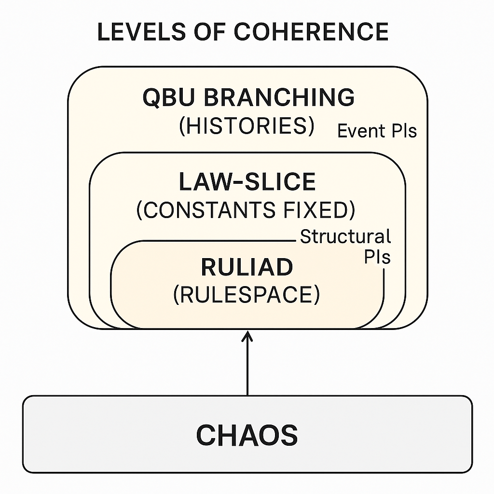

The Tiers of Reality
Why ice floats, and where the Ruliad fits
Water is densest at about 4°C. Cool it from room temperature and it contracts like any ordinary liquid — until 4°C, where it turns around and starts expanding. Freeze it and the anomaly becomes spectacular: the hydrogen bonds lock the molecules into an open hexagonal lattice roughly nine percent less dense than the liquid it came from. So ice floats. Lakes freeze from the top down, the ice sheet insulates the liquid below, and the fish overwinter under a lid instead of being entombed from the bottom up. A biosphere hangs on a quirk of hydrogen bonding.
The chemistry of this is textbook material. The question I care about is what kind of contingency it illustrates. Under ordinary terrestrial pressures, the density anomaly follows robustly from molecular structure, but other ice phases and conditions behave differently. Quantum branching from our actual state does not ordinarily vary the fundamental constants, so counterfactual laws and counterfactual events require different models. The tiers below are a taxonomy for keeping those models apart, not a claim that every possible law is physically realized.
The proposal assigns claims an address — the assumptions under which they are invariant — and stacks those assumptions from a speculative rule-space to this winter’s weather.
Three Tiers of Contingency
Start with the proposal’s foundation. Chaos represents an undifferentiated reservoir of possible informational patterns — not physics or law-space, but the conjectured possibility space. Formal and semantic coherence filters describe selected subsets and modeled worlds. A realization principle would still be needed to show why those descriptions correspond to physical worlds, laws, and objects. The tiers organize the proposal by asking how many selection or interpretation layers it needs and what each layer fixes.
To name what each pass fixes, I will extend a piece of vocabulary from the QBU chapter: the Pattern Identifier (PI), a precise, reproducible pattern used to select a subset of possibilities. There the PIs picked out subsets of timelines within one branching universe. Here the same device operates at three different scopes.
Root Pattern Identifiers. The first great filter over Chaos extracts consistent rule-sets — self-coherent packages of generative law. In Stephen Wolfram’s language this space of all possible rules is the Ruliad, and I will return to him below; in mine, each consistent rule-set is a Root PI: a possible physics, complete with its particle spectrum, its coupling constants, its dimensionality. Our universe is one slice through this space — the Standard Model parameters, gravitation, the electron–proton mass ratio, the fine-structure constant. And this is the tier where “ice floats” is fixed. The density anomaly of water is a consequence of the quantum-electronic structure of the water molecule, which is a consequence of the constants. Pick the Root PI and you have picked the anomaly, everywhere and forever downstream. There is branching at this level, but it is not quantum branching: it is modal partitioning — different possible law-sets generated by different filters over Chaos, alternatives in rule-space rather than forks in a history.
Structural PIs. Within a fixed law model, constants and background conditions permit atoms, molecules, phases, and higher structures. These are Structural PIs. The familiar density relation between ordinary ice and liquid water is robust under a range of terrestrial conditions but depends on pressure, temperature, composition, and phase. Conditionalism states the tier-relativity: given this law model and these conditions, ordinary ice floats.
Event PIs. Only now, with the laws fixed and the structures in place, does physics run — and with it the familiar machinery of this volume. Quantum amplitudes can decohere into the branching records of the Quantum Branching Universe (QBU) defined in chapter 8: different measurement outcomes, ecological histories, and choices of agents at a declared grain. These are Event PIs, and this is the tier where historical contingency is represented. Whether this particular lake freezes over this winter depends on storm tracks, cold snaps, and many interacting processes. The lake-freezing event can receive a Measure once its state, Vantage, horizon, and projector are specified. The density relation that makes ordinary ice float is instead a structural regularity under stated pressure, temperature, and composition conditions.
So the hierarchy has four modeled levels. Chaos represents raw sequences. Root PIs index candidate laws, Structural PIs index regularities conditional on laws and background conditions, and Event PIs index coarse-grained histories under a chosen quantum model. No common measure across Root PIs has yet been supplied.

Read retrospectively, the taxonomy is a map of this book. Parts II and III worked entirely at the Event tier — Measure, Vantage, Branchcones, choice — always inside a fixed physics. Part IV dug beneath it, to the Chaos foundation and the filters that make any physics possible. The tiers say how the two halves bolt together: the QBU is not the whole of reality’s contingency but its topmost kind.
Anthropic Facts Live at the Root
The taxonomy earns its keep the first time someone says we are lucky that ice floats — that in the lottery of possibilities, we happened to draw a biosphere-friendly card. Event-level luck can be represented where histories diverge and Measure weights specified outcomes. But the density relation itself is not one such outcome; within a fixed law model and ordinary terrestrial conditions, it is a structural regularity. Calling the law parameters lucky invokes a different reference class and a measure across cosmological or law alternatives that the QBU event measure does not supply.
Anthropic reasoning can condition on law parameters, cosmological histories, and observer-selection effects at several tiers. The taxonomy helps expose which reference class and measure an argument needs; it does not eliminate those problems or reserve probability and luck for Event PIs alone. You’re Not a Random Sample develops the broader objection to unjustified observer counting.
Wolfram’s Middle Floor
I borrowed the word Ruliad above, and the loan needs settling, because Wolfram’s Observer Theory is often presented as a radical, self-contained reinterpretation of physics, cognition, and mathematics. Translated into the ontology of this volume, its structure becomes transparent: it converges with the Chaos sequence, capturing an important stratum of it in computational language. The mapping is worth making explicit — not to diminish the work, but to locate it precisely.
Begin at the substrate. Wolfram defines the Ruliad as the entangled limit of all possible computations — a universal generative object of irreducible complexity in which every computation exists somewhere and observers inhabit tiny slices. Point for point, this matches the Chaos Reservoir: infinite generativity with no upper bound on complexity, no privileged ontology because all patterns emerge only through filtration, and algorithmic irreducibility — no global compression, only local modeling. The difference is extension. Chaos is the measure-theoretic totality of all possible patterns, computable or not; the Ruliad is what you get when you restrict that totality to what rules can generate. The Ruliad is the computable stratum of Chaos — which is exactly why it is the right home for Root PIs, since a consistent rule-set is precisely a computable way of being a physics.
Next, the mechanism. Wolfram’s central move is equivalencing: the observer compresses vast micro-variation into coarse macrostructure, so that many states become one, and what the observer can stably perceive as an object or a law is fixed by that compression. Axio agrees that compression is where structure comes from, but distributes the work across machinery that Wolfram runs as a single mechanism. On one side sit the Chaos-sequence filters — semantic filters carving structure from the reservoir, coherence filters enforcing consistency of interpretation. On the other side sit the QBU-sequence identifiers — Strong and Weak PIs tracking structural invariants and observer-dependent equivalences across branching histories. Equivalencing spans both layers without distinguishing them; the tiers explain why the distinction matters, since a filter that carves a law-slice and an identifier that tracks a self through branches are doing categorically different jobs.
Then the observer. Wolfram’s observers are computationally bounded subsystems embedded in the Ruliad, persisting through time only because they impose internal consistency constraints on their own evolution. That is recognizably the creature this volume has been assembling all along: the Vantage as a physical conditioning anchor, Measure as the weight of specified event sectors forward of it, Strong PIs as the ancestry that makes it the same observer across time, and constructor capacities as what lets it do more than perceive — impose coherent transformations on the world rather than merely compress it. Wolfram’s account deliberately stops at the epistemic and computational dimensions; observers, for him, are compressors. Axio’s are agents.
Finally, the payoff claim. Wolfram’s boldest thesis is that the laws of physics are not fundamental but emergent from the constraints observers impose in interpreting the Ruliad — continuity, locality, even quantum amplitudes arising from the computational limitations of beings like us. In Axionic terms this is pattern stability under shared filters: observers converge on the same laws because they share sensory constraints, computational bounds, evolutionary ancestry, and the Strong PIs they use to track structure. Stable regularities are fixed points of filtering across many agents with common invariances; Wolfram’s derivations are special cases. And his insistence that perceived lawhood depends on observer structure is Conditionalism arriving without its name. Observer Theory assumes throughout that the laws you infer depend on the conditions under which you infer them; Conditionalism states the principle the theory needs but never articulates. Laws are not eternal forms. They are conditional invariants.
What the mapping also makes visible is what Observer Theory does not attempt — and this is scope, not error. It models observers as compressive systems, not constructor-agents, so it has no theory of agency. It builds no formal machinery for ancestry, selfhood, or persistence across branches, so it has no theory of identity. It is descriptive throughout, so it says nothing about value. It gestures at observer-dependence without building the meta-epistemology, so it borrows Conditionalism implicitly rather than owning it. Each of these is a floor of the building Wolfram simply did not set out to construct.
The architectural comparison is therefore tentative. The Ruliad offers a computational rule-space and an account of observer-relative coarse-graining; Chaos is proposed as a broader sequence space. Showing that one embeds cleanly in the other, or that either derives our laws, would require formal mappings and measures not provided here. The comparison is a research direction rather than a verdict that one theory contains the other.
Not every rival architecture integrates so gracefully. Simulation theories, Langan’s CTMU, cosmological idealism, the Gödelian case against a computable universe — each claims the whole building, foundation to roof, and each has to be met rather than absorbed. That reckoning is next.